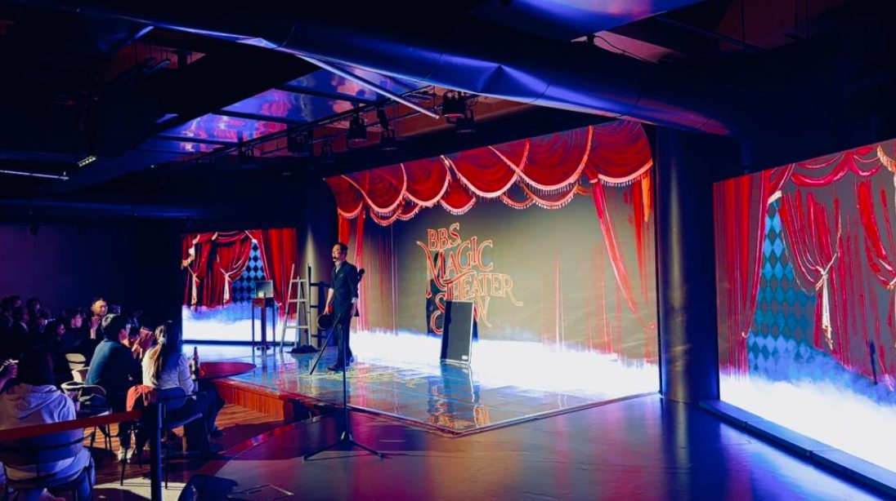
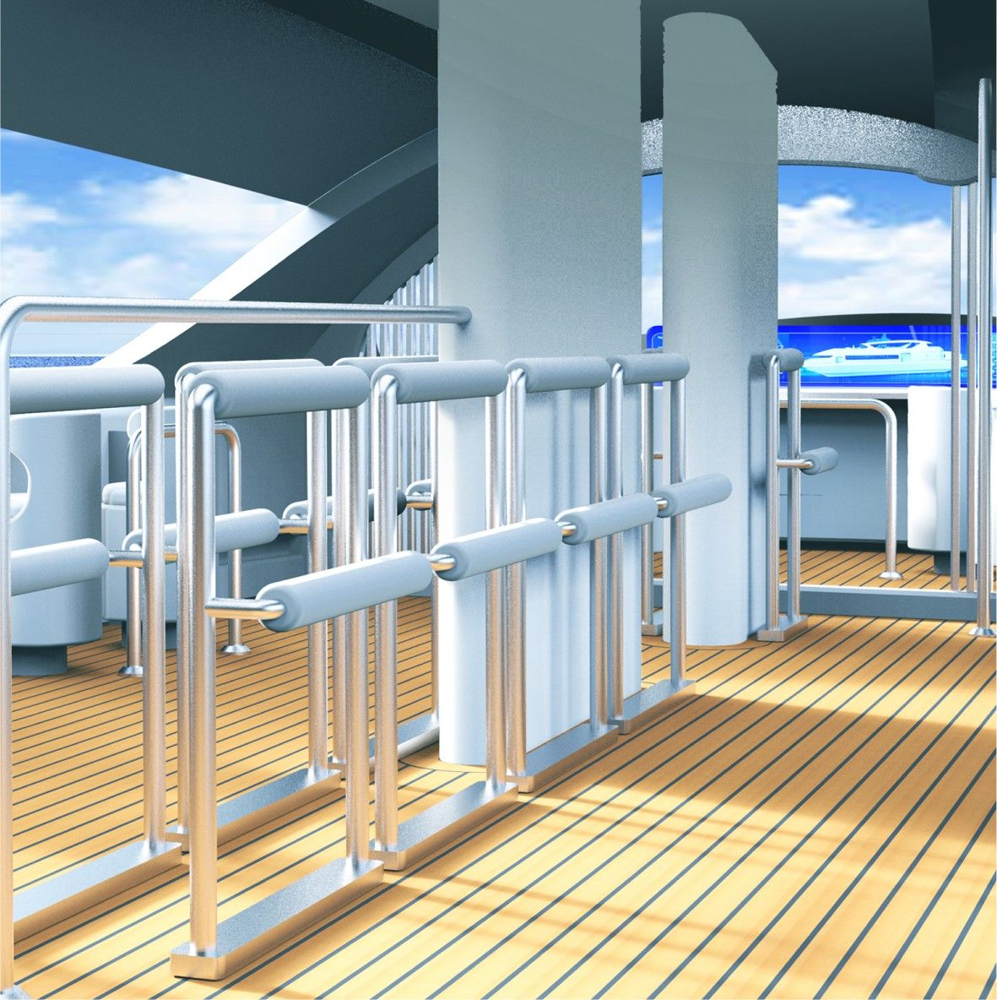
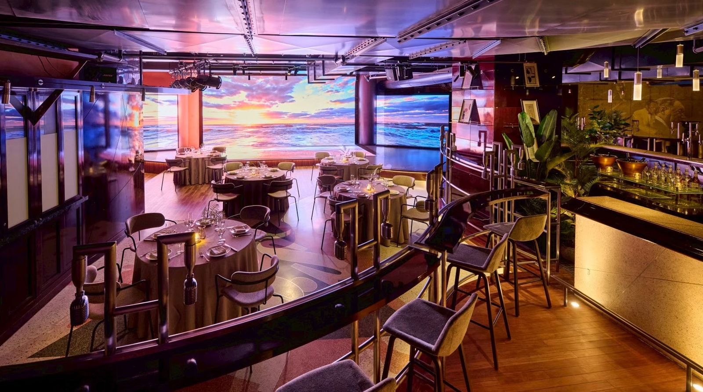
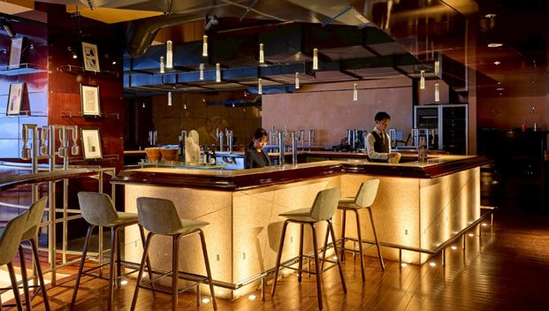

DAY CRUISE
昼の便
光る水面と青い空。ホテルのチェックアウト後に、そのまま海へ。旅の締めくくりにも。
12:30 出発Osaka Bay Cruise
海辺のホテルから、
水素の船で大阪湾へ。
団体旅行・懇親会・企業イベントに。
次世代旅客船 HANARIA を、1便まるごと貸切で。
About HANARIA

HANARIA は、水素燃料電池とバッテリーを組み合わせて走るハイブリッド旅客船です。エンジン音や振動が少なく、海と街の景色を静かに味わえます。
南港 ATC 浮桟橋から大阪湾のベイエリアへ。社員旅行や団体旅行、懇親会、企業イベントの舞台として、船を1便まるごと貸し切ってお使いいただけます。
Plans
HANARIA は団体・貸切でのご利用専用です。ご利用の目的にあわせてお選びください。
団体旅行、懇親会、企業イベントに。HANARIA を1便まるごと貸し切って、大阪湾へ出かけます。
 PLAN 02
PLAN 02グランドプリンスホテル大阪ベイでのご宿泊に、貸切クルーズを組み合わせて。チェックアウト後の昼の便もご利用いただけます。

PLAN 03マジックショーやお笑いライブなど、ホテルで楽しむエンターテインメントと貸切クルーズを一日で。
Private Cruise
出発は昼・夕・夜の3つの便から。どの便も60分または90分をお選びいただけます。ほかの時間帯での運航もご相談ください。
光る水面と青い空。ホテルのチェックアウト後に、そのまま海へ。旅の締めくくりにも。
12:30 出発海に沈む夕日を、さえぎるもののない船上から。懇親会の始まりにもぴったりの時間です。
16:30 出発ベイエリアの灯りと、海の上の静けさ。パーティーや二次会の会場として。
18:30 出発



Stay & Cruise
グランドプリンスホテル大阪ベイでの団体のご宿泊に、貸切クルーズを組み合わせてご利用いただけます。
チェックイン後に夕の便で大阪湾へ。翌日はチェックアウト後、昼の便で旅を締めくくることもできます。
※ 行程はモデルプランです。クルーズはどちらか一方の日だけでもご利用いただけます。
※ ご宿泊は、ホテルへ別途お申し込みください。ご宿泊とクルーズをまとめた団体旅行プランは、2027年以降にご案内する予定です。
Show & Cruise
マジックショーやお笑いライブなどのエンターテインメントと、貸切クルーズを組み合わせたプランです。会場は、グランドプリンスホテル大阪ベイの地下1階にある、大型LED映像設備を備えたイベント・ダイニングスペース「B.B.S.」です。

ステージの正面・左右・床面をLEDビジョンが囲む B.B.S. で、映像演出とともに繰り広げられるマジックやお笑いを間近に。その前後に、貸し切った HANARIA で大阪湾へ。
※ 演目・公演日・料金は、お見積りの際にご案内します。団体向けの貸切公演もご相談いただけます。順番は入れ替えることもできます。
セットプランを相談する




Price
料金は1便ごとの貸切料金です。ご利用内容をうかがって、お見積りをお出しします。
| プラン | 料金（1便・税込） | 含まれるもの |
|---|---|---|
| 貸切クルーズ 60分昼 12:30／夕 16:30／夜 18:30 | お見積り | 貸切運航・桟橋の使用料 |
| 貸切クルーズ 90分昼 12:30／夕 16:30／夜 18:30 | お見積り | 貸切運航・桟橋の使用料 |
| 飲み放題オプション | お見積り | 乗船人数分のお飲み物 |
| コンテンツ×貸切クルーズご宿泊の追加も可 | お見積り | ショー観覧＋貸切クルーズ |
※ 取消料・お支払い方法は、お見積りの際にご案内します。
Partner Sites
Hotel
大阪湾に面したアーバンリゾートホテル。客室・レストラン・ご宿泊プランは、ホテル公式サイトでご覧いただけます。
ホテル公式サイトへ ↗Event Dining
ホテル地下1階、大型LED映像設備を備えた貸切イベント・ダイニングスペース。イベント情報や会場の詳細はこちら。
B.B.S. 公式サイトへ ↗Magic Show
B.B.S. で開催する、プロマジシャンが多数出演するマジック公演。300インチのLEDで、手元の不思議まで大きく映します。コンテンツ×貸切クルーズの演目としてもご相談いただけます。
公演サイトへ ↗Access
FAQ
HANARIA は団体・貸切でのご利用専用で、お一人様単位での乗船券の販売は行っていません。人数の下限はないので、少人数のグループでも1便まるごと貸し切ってご利用いただけます。
最大100名です。船内でお食事やイベントを行う場合の適正人数はレイアウトによって変わるため、ご相談ください。
運航日の1週間前までにお申し込みください。日程が決まっていない段階でのご相談も承ります。
飲み放題をオプションでご用意しています。お食事は原則としてお客様でのご手配となり、ケータリングや持込みはご相談を承ります。
安全のため、運航会社の判断で別の日への振替、または中止とします。中止の場合、取消料はかからず、お支払い済みの代金は全額お返しします。
現在は、ご宿泊をホテルへ別途お申し込みいただき、クルーズの貸切をこちらでお受けしています。ご宿泊とクルーズをまとめた団体旅行プランは、2027年以降にご案内する予定です。
Reservation
団体・貸切のご相談を受け付けています。内容を確認のうえ、担当者からお見積りとあわせてご連絡します。